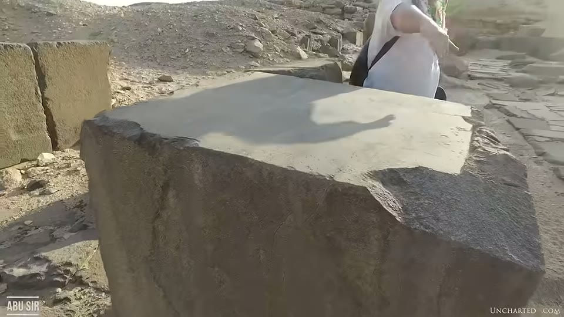
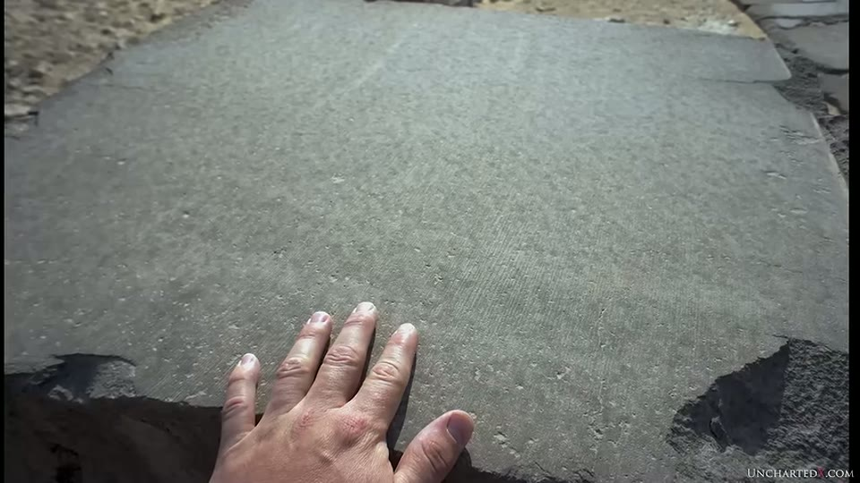
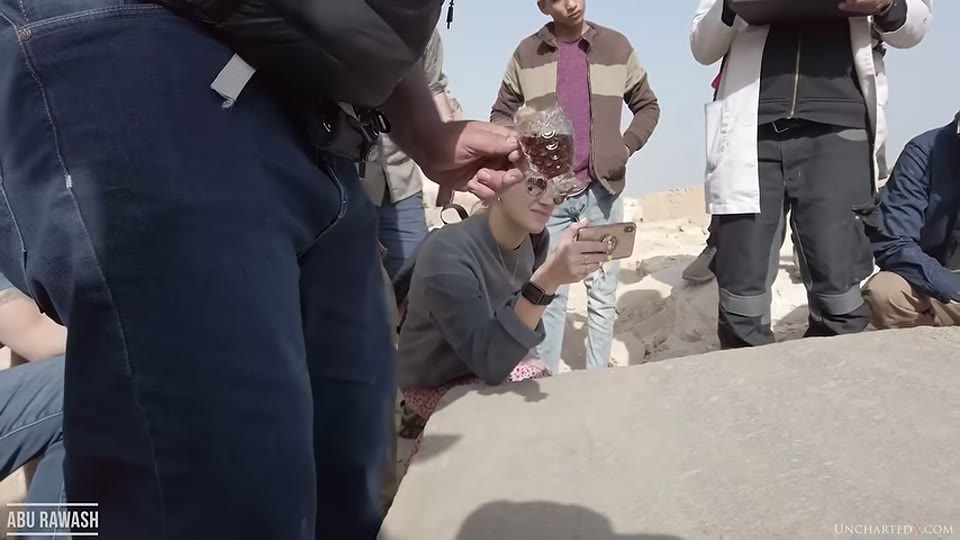
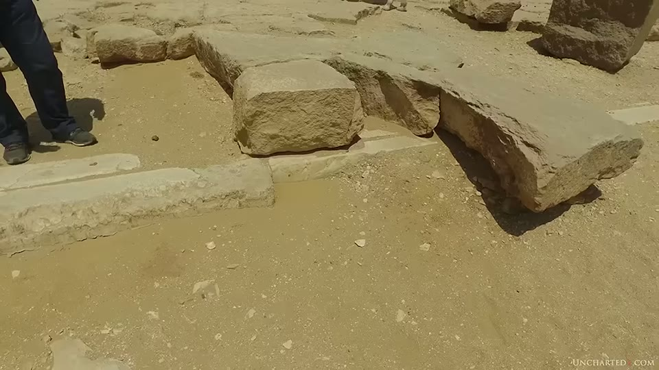

UnchartedX
The Mystery of Ancient Egyptian Stone Cutting in Basalt and Granite - UnchartedX full documentary!
Ben · 64 min · watch on YouTube · summarised 2026-10-02
The strongest sections of this video are the ones where Ben argues with published papers rather than with footage, and he quotes them at length. It is the companion to the tube drills entry — the same format, the same length, the other half of the tool-mark evidence.
Two subjects: the basalt pavements of Old Kingdom pyramid sites and the marks on them, and the channelled blocks that run under the floors.
The material
03:28–05:25. Basalt is about 90% of the volcanic rock on Earth; the stone at these sites could also be described as diabase or dolerite. Two properties carry the argument: its average density is greater than granite's, and it is harder — commonly 7 or 8 on the Mohs scale. Ben notes the name derives from Latin basanites, "very hard stone".
Where it is found 05:25–06:10: the pavement east of the Great Pyramid at Giza; Abusir, at the Sahure, Neferirkare and Nyuserre complexes; Saqqara, in the Userkaf complex; and basalt paving blocks in the great pit below the Step Pyramid, the site covered in the Old Kingdom timeline entry.
And one piece that is gone 06:23–07:20. The box from the third pyramid, attributed to Menkaure, was a single piece of basalt of around three tons. Howard Vyse removed it in 1837 and shipped it to England aboard the merchant ship Beatrice, which sank in the Mediterranean around 13 October 1838. It has never been found.
The paper that asks the question
08:20–12:09. James K. Hoffmeier, Journal of the American Research Center in Egypt, 1993, "The Use of Basalt in Floors of Old Kingdom Pyramid Temples", quoted at length. What Ben takes from it is that the puzzle is mainstream Egyptology's own:
"Over the years there has been considerable scholarly discussion devoted to the function of the various structures of Old Kingdom pyramid complexes… Basalt has been found as flooring in a number of upper temples, but suggestions to explain its presence are lacking."
The paper's survey, as read out: three basalt paving blocks found by Firth and Quibell in the great pit at Saqqara; at Giza, virtually all that remains of Khufu's funerary temple is its basalt floor; Firth's 1928–29 clearing of the Userkaf complex revealed a basalt pavement in the open court measuring 35 by 21 metres, with two further basalt-floored chambers, a basalt-floored offering place, and a causeway also covered in basalt; and parts of the upper temples at Abusir. Hoffmeier cites Dieter Arnold for the absence of basalt pavements in the 12th-Dynasty complexes at Lisht and Dahshur, and J. R. Harris on the general restriction of basalt use after the Old Kingdom.
The quarry 10:53–11:27: an ancient basalt quarry found in 1987 at Widan el-Faras, north of the Fayum, with remnants of an ancient road partly paved in basalt. Hoffmeier gives the distances as 58 km to Giza and 61 km to Saqqara, and asks the question Ben builds on:
"The complexity of installing a basalt pavement, which involved sawing and pounding the blocks into shape, must also be considered. This factor forces one to ask why go to the additional trouble and expense of bringing basalt for paving Khufu's upper temple floor, rather than using local material or even the bedrock."
Ben's addition is one word changed: "why is there evidence on this basalt of far more than simple sawing or pounding?" He notes Hoffmeier goes on to propose a ceremonial purpose and does not examine manufacture.

The pavement the saw-cut evidence sits on, and who sits on it.
Petrie's plate 14
12:44–14:30. From The Pyramids and Temples of Gizeh (1883), six examples read out in full — cuts from the Great Pyramid coffer where the saw ran too deep "twice over and backed out again"; a piece of syenite from Memphis cut on four faces; a piece of basalt with a cut run askew and abandoned, with the sawing dust and sand still in it; two more from the great basalt pavement; and the sixth, which is the one that matters:
"A slice of diorite bearing equidistant and regular grooves of circular arcs, parallel to one another. These grooves have been nearly polished out by cross grinding, but still are visible. The only feasible explanation of this piece is that it was produced by a circular saw."
Ben's point from Petrie is a distinction rather than a conclusion: Petrie repeatedly separates cutting with a fixed point of some unknown hard material from grinding with sand, and it is grinding that mainstream Egyptology offers as the only method. The same split runs through the machining entry and the tube drills entry.
The mainstream explanation, and the arithmetic against it
18:01–25:20. This is the best-argued passage in the video, and it works because the numbers come from the people being disagreed with.
Robert G. Moores Jr, JARCE 1991, "Evidence for Use of a Stone-Cutting Drag Saw by the Fourth Dynasty Egyptians", proposed a copper drag saw. Ben quotes two of Moores' own concessions first:
"The degree of mechanization indicated by this operation is somewhat more advanced than general views of the pyramid builders' technology level now hold… the sawing done in this place represents a sophisticated operation of a mature industry."
The blade as specified, via Christopher Dunn's account: copper with a notched leading edge, 4 m long, 60 cm broad, wedge-shaped from 1 cm at the top to 3 mm at the edge, weighing an estimated 140 kg. Quartz sand as abrasive, loose and embedded; the block fixed in a water-filled trench; the blade swung on ropes by a team who managed its descent.
The claimed rate: one back-and-forth cycle cutting 2 mm, a swing time of 2.84 seconds — 42 mm per minute.
Against it, two measured figures:
- A modern diamond saw. US patent 7,082,939, filed 2003, for an improved frame saw with diamond-impregnated carbon alloy steel blades, cites a down-feed into granite of 30 mm per hour. Moores' copper-and-sand rate is 84 times faster than that — and into basalt, which is harder.
- Denys Stocks' experiment, 1999. A blade 1.8 m long, 15 cm deep, 6 mm thick, 14.5 kg plus 45 kg of stone weights. Results: 0.084 to 0.105 inches per hour, about 2.1 to 2.7 mm per hour. Stocks also found that a hand-powered saw advances more slowly over a longer cut than a short one, and that he lost nearly half a kilogram of copper from the blade over 14 hours.
Ben is explicit that he rates the experiment even while disputing its framing: "this sort of testing is a very good thing and should be applauded, as ultimately this sort of data should help us to get closer to the truth." A copper-saw experiment of the same kind is covered from the other direction, over the same Giza granite, in the Giza granite entry.

The mainstream mechanism, as its own paper draws it.
The figure is reproduced from the paper and carries its own citation detail, legible on screen and not spoken: the running head "USE OF A STONE-CUTTING DRAG SAW BY FOURTH DYNASTY EGYPTIANS 147" and the caption "Fig. 11. Operation of the 4th Dynasty drag saw", with Dunn's text beside it referring to the same image as his figure 10.22. The drawing shows the block in a water-filled trench, the blade slung from two A-frame trestles, and rope teams of five or six at each end.
Dunn's extrapolation from Stocks' rate 24:22–25:20: the six basic cuts to rough out the granite box in the second pyramid — top, bottom and four faces, nothing hollowed, finished or polished — would take about 6,270 hours, or 261 days of round-the-clock work.
And the question turned round 28:50–29:19: "where are the tools" is usually asked of the alternative case. No copper saw of the kind Moores describes has ever been found, and neither has the smaller type Stocks built for cuts two to three feet long.
The circular cuts
29:19–39:42. The part Ben says mainstream Egyptology has no account of.
The Abusir block is the example he rates highest: a large basalt block nearly sawn through, with consistent curved striations and a lip at the edge of the cut indicating a blade only a few millimetres wide. Extrapolating the curve, he puts the possible saw diameter at up to 9 metres.


The cut offered as the clearest circular-saw evidence.
The Abu Rawash slab 31:02–36:10, which he reached in late 2020 with special permission. Cut with what he reads as a circular saw, and concave — a consistent radius both horizontally and vertically. On camera with Yousef Awyan the two work through it: water poured on the stone to raise the striations; Awyan's reading that the closest result he knows is a 6 mm Dremel-type rotating bit moved across the surface; his suggestion that the cut is an inside cut, from a corner or a box, which makes a saw harder to apply; and his specific objection to Dunn's published drawings, which place the stone at the bottom of a pit — "that would be a very hard challenge to put the granite stone down there" — preferring the disc above and the stone passing beneath.


The concave cut, and the conditions it was examined in.
The slab is filmed in the middle of a tour group. Across the whole sequence the surface is crossed by the shadows of standing figures, people lean over it with phones, and one man wipes it with a cloth while water is poured from a plastic bag. The concave radius the geometric argument turns on is not judgeable from any frame, and no straightedge, gauge or level is put on the stone at any point — the only technique applied to it is wetting.
Dunn's geometric argument, quoted 37:26–39:28: a hand-operated straight saw drifting up and down is a common occurrence and a perfectly straight cut is almost impossible — but a concave radius is not drift. "It is physically impossible to create a saw cut where the entrance and exit points are higher than the middle with a flat edged straight saw." He notes Stocks did not observe such a condition.
And one block showing both 36:12–37:15: a quartzite slab tucked in a corner at Abusir with fine straight saw marks along its edges and deeper circular marks on its top surface, nearly cut through at one end.
The channelled blocks
41:14–45:47. The second subject, and the one Ben treats as evidence of function rather than of tooling.
U-shaped blocks run beneath the floor level of pavements and causeways across Old Kingdom sites — best preserved at Abusir, where the infrastructure can be followed through the courtyards of Sahure and Nyuserre, with one quartzite channel appearing to exit into a quartzite bowl. Single blocks survive at Saqqara, at Dahshur near the Bent Pyramid, in the middle pyramid complex at Giza, and at Mastabat el-Faraun, which Ben credits to an email from Keith Hamilton. They are made of limestone, alabaster and quartzite, and show bends, Y-joints and junctions.


The sub-floor infrastructure the function argument rests on.
The Serapeum boxes he counts among the cutting work are held as the Serapeum entry.
His argument is about visibility: in the original structures these blocks were under several feet of stone paving and could not be seen, so a ceremonial reading has nothing to work with. The only mainstream explanation he says he has been offered is a sewer system, which he rejects on the grounds of the materials — alabaster and quartzite carried long distances — and treats with ridicule for several lines.
Yousef Awyan puts the same point as a test: a stone brought from far away for decoration would be left visible; one that is hidden must have been brought for a function.
The closing argument
45:47–49:10. The inverse-progression claim, stated for Egypt and then for Peru.
For Egypt: the Old Kingdom is the first period and also the one responsible for the greatest works, after which later periods could not replicate them and instead quarried them — he cites the Dream Stele between the Sphinx's paws, carved into a recycled piece of Old Kingdom granite.
For Peru: of thirteen Inca rulers, the first eight have megalithic courtyards and the ninth to thirteenth only small local stone, a loss he puts at decades rather than centuries. The architectural-style argument behind that is held as the Sacsayhuamán styles entry.
What you can check yourself
- Three papers are named with journal and year — Hoffmeier 1993 and Moores 1991, both in JARCE, and Stocks' 1999 experiment — and the quoted passages can be read in context.
- A US patent number is given. 7,082,939, filed 2003, and its stated down-feed rate into granite can be read off the patent.
- The arithmetic is reproducible. 42 mm/min against 30 mm/hour is a factor of 84; Stocks' 2.1–2.7 mm/hour against the same is a factor of about 14 the other way.
- Petrie's plate 14 is in The Pyramids and Temples of Gizeh, out of copyright and online, and his six examples can be compared with the reading.
- The basalt pavement at Giza is public — it is where tourists sit — and the plunge cuts and striations on the sides of the blocks are photographable by anyone who looks.
- The Beatrice sinking and the fate of Menkaure's basalt box are in the documentary record.
- Widan el-Faras and its road are published, as are the distances to Giza and Saqqara.
- The channel blocks at Abusir are in situ and visible at the foot of the causeway.
What the video does not settle
- The citation detail is on screen and unspoken. The page number, figure number and running head of Moores' paper are legible in the reproduction; the narration gives author, journal and year only.
- Nothing is measured on camera. The 9-metre saw diameter is extrapolated by eye from a curve; the blade width "only a few millimetres" is read off a lip; no gauge, scale or straightedge is used on any block in the video.
- The rate comparison is between a best case and a measured one, and the video says so of Moores but not of the patent. Moores' 42 mm/min is flagged as his own best-case estimate; the patent's 30 mm/hour is a figure from a patent application, which is not the same as an independent measurement of modern sawing, and no range or alternative modern figure is given.
- Dunn's 6,270 hours is an extrapolation of an extrapolation. It applies Stocks' small-blade rate to a different stone volume with a different geometry, and treats six cuts as the whole of the rough-out.
- The concave-cut argument rules out one tool, not in another. That a flat straight saw cannot produce a concave radius is a geometric claim about straight saws; what did produce it is left open, and the two candidates raised on camera — a large circular saw and a small rotating bit — differ by orders of magnitude in size and are not reconciled.
- The Abu Rawash slab is not explained, and Ben says so, deferring it to a later video.
- The channel blocks have no proposed function either. The sewer reading is rejected; what is offered in its place is "could they have been used for liquid" and "were they used to house something like copper piping", both as questions. No residue analysis, gradient survey or flow direction is cited.
- The sewer explanation is answered with ridicule rather than with evidence. Several lines are spent on the image of pharaonic plumbing; no Egyptological source proposing the sewer reading is named or quoted, so what is being rejected cannot be checked.
- The mainstream's motives are asserted at length 39:42–41:14 — tenure, ivory towers, "obfuscation and logical fallacies, if not outright deception" — and no instance is documented in this video beyond a reference to the tilted photograph of Petrie's core 7, which is itself argued in the tube drills entry.
- The Inca courtyard claim arrives without a source. Thirteen rulers, the first eight megalithic, is stated and not referenced.
- Basalt's hardness is given as a range used selectively. "Commonly a seven or even an eight" on Mohs, and harder than granite, is stated without a source; the two stones overlap in published hardness ranges and the comparison matters to the cutting-rate argument.